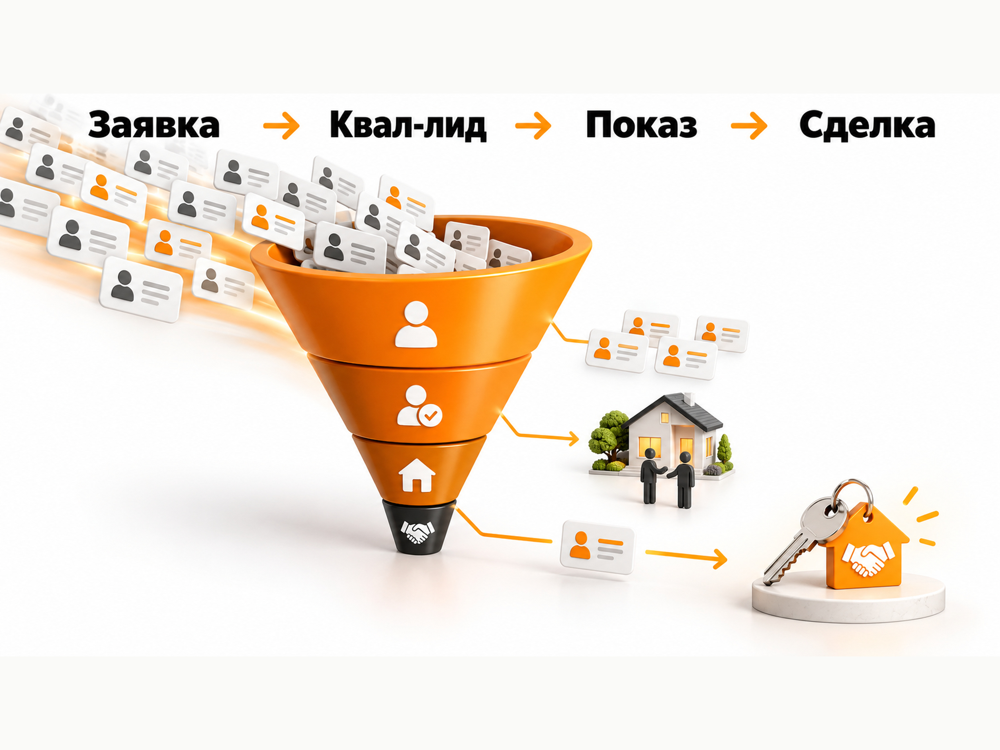

Блог о платном трафике
Продвижение агентства недвижимости в 2026 году: инструкция и прогноз
Если агентству недвижимости нужен платный трафик на русскоязычную аудиторию, Яндекс Директ я бы проверял одним из первых каналов. Особенно там, где человек уже сформулировал спрос: ищет квартиру, новостройку, недвижимость у моря, объект для инвестиций или конкретную географию.
Но в недвижимости практически бесполезно смотреть только на стоимость заявки. Между формой на сайте и реальной сделкой слишком много этапов:
реклама -> заявка -> квалифицированный лид -> консультация или показ -> сделка
Свежие кейсы хорошо показывают разницу. Можно получать заявки по 1 000-2 000 ₽, но после проверки бюджета, сроков покупки и реального интереса стоимость нормального лида оказывается в несколько раз выше.
Поэтому ниже я буду отдельно показывать опубликованные результаты, расчёты и мой прогноз. Цифры нельзя воспринимать как средние по рынку.
Что показывают свежие кейсы по недвижимости

Я посмотрел опубликованные результаты преимущественно за 2025-2026 годы. Разброс очень большой даже внутри одного направления.
В моём собственном кейсе агентства недвижимости из Екатеринбурга задача заключалась в продвижении trade-in. За первые месяцы получили 83 заявки по 1 774 ₽ через Яндекс Директ. Кейс агентства недвижимости и trade-in.
Свежий сторонний проект по Крыму показывает 124 лида по 1 616 ₽ за апрель 2026 года. В том же источнике по Сочи опубликован результат 76 лидов по 3 246 ₽. Это уже хорошо показывает, насколько даже похожая курортная недвижимость может отличаться по стоимости обращения.
В кейсе новостройки в Сибири за январь-март 2026 года количество квалифицированных обращений выросло с 29 до 177, а стоимость SQL снизилась с 33 227 до 8 588 ₽. Отдельная конкурентная поисковая кампания давала обычный CPL 3 133 ₽. То есть цена формы и цена действительно пригодного отделу продаж контакта снова оказываются разными показателями.
Курортная недвижимость России
В большом кейсе по Крыму за 2025 год опубликована ещё более показательная воронка: только примерно 1 из 10 заявок соответствовала нужному бюджету клиента. Из 100 таких целевых заявок автор кейса указывает от 3 до 10 продаж в зависимости от работы отдела продаж.
Это одна из причин, почему обещание агентству недвижимости «лиды по 1 500 ₽» практически ничего не говорит об экономике.
Если CPL составляет 1 500 ₽, но квалификацию проходит 10% обращений, фактическая стоимость квалифицированного лида получается уже около 15 000 ₽.
Это расчёт, а не опубликованная средняя цена по Крыму.
Что происходит с рекламой недвижимости в Таиланде
Зарубежная недвижимость особенно хорошо показывает проблему дешёвых заявок.
В одном проекте по Пхукету с конца марта по конец мая 2026 года было потрачено около 250 000 ₽. Автор приводит следующую воронку:
- около 200 заявок;
- около 35 целевых обращений;
- около 12 онлайн-показов;
- 1 сделка.
Обычная входящая заявка из Директа стоила около 1 000-1 200 ₽. Стоимость квалифицированного лида, подтверждённого отделом продаж, составила примерно 7 000 ₽.
Если пересчитать опубликованную воронку:
250 000 ₽ / 35 целевых лидов = около 7 140 ₽ за квалифицированный лид.
250 000 ₽ / 12 онлайн-показов = около 20 830 ₽ за показ.
250 000 ₽ / 1 сделка = около 250 000 ₽ рекламных расходов на зафиксированную за этот период сделку.
Это уже намного полезнее обычного CPL.
Причём в кейсе тестировали разные посадочные страницы и квизы. Один из рабочих офферов сравнивал квартиру на Пхукете с курортной недвижимостью в России при сопоставимом бюджете покупателя.
Другой свежий кейс по Пхукету показывает около 60 заявок и 30 квалифицированных лидов в месяц. Авторы отдельно отмечают около 50% нецелевых обращений и стоимость квалифицированного лида $150-160.
Цифры между проектами отличаются кратно. Поэтому для Таиланда я бы вообще не ставил KPI по обычной форме на сайте. Главная метрика здесь - стоимость человека с подходящим бюджетом и реальным сроком покупки.
Что происходит с недвижимостью в Дубае
По Дубаю свежих публичных кейсов с полной воронкой меньше.
В одном подробном проекте агентства, работающего с русскоязычными покупателями недвижимости в Дубае, за февраль-октябрь 2025 года опубликовано:
- 3 988 заявок;
- 7 852 372 ₽ рекламных расходов;
- CPL 1 969 ₽;
- 360 целевых обращений;
- CPQL 21 812 ₽.
В проекте использовались Яндекс Директ и Google Ads, поэтому эти результаты нельзя выдавать за чистую статистику одного Яндекса. Но разница между CPL и CPQL показательна сама по себе.
Только около 9% всех заявок в этой статистике попало в категорию целевых.
Получается ситуация:
сырая заявка - около 2 000 ₽;
целевое обращение - около 22 000 ₽.
Поэтому в Дубае особенно опасно оптимизировать рекламу только под отправку формы. Алгоритм легко научится находить людей, которые хотят посмотреть цены или получить подборку, но не готовы покупать объект.
Какой прогноз я бы использовал для агентства недвижимости
Единого CPL для недвижимости нет. Даже география сама по себе недостаточна.
На результат влияют:
- стоимость объектов;
- первичная или вторичная недвижимость;
- инвестиционная покупка или жильё для себя;
- конкретный город;
- размер аудитории;
- известность застройщика или агентства;
- предложение;
- посадочная страница;
- критерии квалификации;
- скорость отдела продаж;
- срок сделки.
Но для первого медиаплана рабочий диапазон всё равно нужен.
Региональное агентство недвижимости в России
Для обычного регионального проекта я бы первоначально закладывал:
1 500-4 000 ₽ за первичную заявку.
Это именно прогнозный диапазон. Он опирается на свежие кейсы trade-in, новостроек и региональной недвижимости, а не является официальной средней ценой рынка.
При бюджете 100 000 ₽ это примерно 25-67 первичных обращений.
Но дальше обязательно нужно считать качество.
Если агентству нужны не заявки, а люди с подходящим бюджетом, прогноз необходимо перестраивать через процент квалификации.
Сочи, Крым и Черноморское побережье
Здесь в свежих кейсах встречается диапазон примерно от 1 600 до 3 250 ₽ за обычную заявку.
Для предварительного прогноза я бы закладывал:
1 500-3 500 ₽ за входящее обращение.
При бюджете 150 000 ₽ это примерно 43-100 заявок.
Но этот расчёт нельзя заканчивать на CPL.
Если квалификацию проходят только 10% обращений, как в одном опубликованном кейсе по Крыму, из 50 заявок получится всего около 5 целевых покупателей.
Поэтому для курортной недвижимости я бы сразу фиксировал минимум четыре показателя:
CPL -> CPQL -> стоимость показа или встречи -> CAC.
Таиланд
Для Таиланда свежие кейсы дают слишком большой разброс, чтобы выводить один диапазон.
В одном проекте Директ дал заявки примерно по 1 000-1 200 ₽ и квалифицированный лид около 7 000 ₽. В другом опубликован CPQL $150-160.
Поэтому на старте я бы ориентировался не на обещание конкретного CPL, а на тестовый рекламный бюджет порядка 150 000-300 000 ₽ с обязательной фиксацией качества каждого обращения.
После первых 20-30 квалифицированных лидов прогноз уже можно пересчитывать по фактической воронке проекта.
Дубай
Дубай я бы изначально относил к более дорогому тесту.
Если использовать опубликованный CPQL около 21 800 ₽ только как расчётный ориентир, то:
300 000 ₽ / 21 800 ₽ = примерно 14 целевых обращений.
500 000 ₽ / 21 800 ₽ = примерно 23 целевых обращения.
Это не обещание результата. Исходный кейс включал Яндекс Директ и Google Ads, а данные относятся к конкретному агентству и конкретной аудитории.
Но такой расчёт намного реалистичнее, чем планировать Дубай исходя из дешёвых форм по 2 000 ₽.
Как считать допустимую стоимость квалифицированного лида
Для агентства недвижимости полезнее идти от сделки назад.
Формула:
Допустимый CPQL = допустимый CAC × конверсия квалифицированного лида в сделку
Например, агентство готово тратить 150 000 ₽ рекламного бюджета на одну продажу.
Если из квалифицированных лидов в сделку превращаются 5%:
150 000 × 5% = 7 500 ₽
Допустимая стоимость квалифицированного обращения - 7 500 ₽.
Если отдел продаж закрывает 10%:
150 000 × 10% = 15 000 ₽
Тогда агентство может покупать квалифицированный лид уже по 15 000 ₽ и сохранять ту же стоимость продажи.
Именно поэтому два агентства с одинаковой рекламой могут получать совершенно разный финансовый результат.
Что считать квалифицированным лидом
Определение нужно согласовать ещё до запуска рекламы.
Для обычной недвижимости это может быть человек, который:
- подходит по бюджету;
- действительно планирует покупку;
- рассматривает нужную географию;
- подходит по типу объекта;
- оставил рабочие контакты;
- вышел на связь.
Для зарубежной недвижимости я бы дополнительно фиксировал срок покупки.
Человек с бюджетом $200 000, который говорит «когда-нибудь посмотрю Дубай», и человек с тем же бюджетом, планирующий покупку в течение двух месяцев, для рекламного алгоритма не должны быть одинаковыми конверсиями.
Как запускать Яндекс Директ для агентства недвижимости
1. Начать с горячего поискового спроса
Поиск позволяет работать с людьми, которые уже сформулировали намерение.
Например:
- купить квартиру в Сочи;
- недвижимость Крым купить;
- новостройки Екатеринбурга;
- квартира trade-in Екатеринбург;
- купить квартиру Пхукет;
- недвижимость в Таиланде;
- купить недвижимость в Дубае;
- апартаменты Дубай купить.
Чем ближе запрос к конкретному объекту, локации и покупке, тем проще оценивать его коммерческий смысл.
Но самые очевидные фразы обычно одновременно самые конкурентные.
Поэтому я собираю не только высокочастотные запросы, но и длинный хвост: районы, типы объектов, цены, рассрочки, инвестиционный сценарий, переезд, конкретные ЖК и другие реальные формулировки пользователей.
После запуска нужно регулярно смотреть фактические поисковые запросы и добавлять минус-фразы. Готовый чужой список здесь скорее навредит. Подробнее я писал об этом в статье про минус-фразы в Яндекс Директе.
2. Не смешивать разные направления в одну посадочную
Если агентство одновременно продаёт:
- Москву;
- Сочи;
- Крым;
- Дубай;
- Таиланд,
я бы не вёл весь трафик на главную страницу с огромным каталогом.
У человека, который ищет квартиру на Пхукете, другие вопросы и возражения, чем у покупателя вторички в Екатеринбурге.
Лучше делать отдельные смысловые посадочные под географию или крупный сегмент.
Для зарубежной недвижимости на первом экране полезнее сразу показать конкретику:
- минимальную стоимость входа;
- типы объектов;
- локацию;
- варианты оплаты, если они действительно доступны;
- кому подходит предложение;
- что человек получит после заявки.
Форма «Оставьте телефон, мы вам перезвоним» слишком слабо квалифицирует пользователя.
3. Использовать квиз как фильтр, а не только как генератор дешёвых заявок
В квизе можно заранее спросить:
- бюджет;
- цель покупки;
- тип объекта;
- желаемую локацию;
- срок покупки.
Но количество заполненных квизов само по себе не является результатом.
Если короткий квиз увеличивает конверсию сайта в два раза, а доля нормальных покупателей падает в четыре раза, экономика становится хуже.
Поэтому варианты посадочных нужно сравнивать по CPQL, а впоследствии по продажам.
4. РСЯ использовать отдельно от поиска
Поиск и РСЯ работают с разным поведением пользователя. Сам Яндекс рекомендует разделять управление поисковым и сетевым размещением, поскольку механика показа и ценообразование отличаются.
Через РСЯ можно:
- расширять охват за пределами сформированного поискового спроса;
- возвращать посетителей сайта;
- работать с интересами;
- тестировать аудитории конкурентов и смежные интересы;
- показывать конкретные объекты и офферы.
Но в недвижимости дешёвый сетевой лид особенно легко превращается в красивую цифру без продаж.
Поэтому поиск и РСЯ нужно сравнивать не по CTR и даже не по CPL, а по качеству обращений.
Подробнее о различиях я писал в материале «Поиск или РСЯ в Яндекс Директе».
5. Передавать квалифицированные лиды обратно в Яндекс
Это один из самых важных пунктов для недвижимости.
Если Директ получает сигнал только «форма отправлена», алгоритм учится искать людей, которые хорошо отправляют формы.
Не обязательно людей, которые покупают квартиры.
Яндекс позволяет передавать в Метрику офлайн-конверсии из CRM. Для сопоставления можно использовать ClientID, телефон или email. Эти данные можно использовать в статистике и оптимизации рекламы.
Я бы создавал отдельные цели:
Заявка
Квалифицированный лид
Назначена консультация или показ
Сделка
После накопления достаточного объёма данных стратегию можно обучать на более глубокой цели.
Для недвижимости это зачастую важнее десятков мелких изменений объявлений.
6. Не дробить кампании сильнее, чем позволяет объём данных
Распространённая структура выглядит красиво:
- Москва поиск;
- регионы поиск;
- РСЯ;
- ретаргетинг;
- каждый ЖК отдельно;
- каждая аудитория отдельно;
- инвесторы отдельно;
- переезд отдельно;
- квартиры отдельно;
- виллы отдельно.
В результате на каждую кампанию приходится несколько конверсий в месяц, и алгоритм практически нечему обучать.
Если данных немного, я предпочитаю сначала укрупнить структуру и получить статистически полезный объём целевых действий.
Уже после этого имеет смысл разделять сегменты, если цифры действительно показывают различия.
7. Использовать актуальные форматы объявлений
В 2026 году в Единой перфоманс-кампании Яндекс перевёл основной текстово-графический формат на комбинаторные объявления. В них можно добавлять несколько заголовков, текстов, изображений и видео, а система самостоятельно формирует и тестирует комбинации.
Для недвижимости это удобно: можно одновременно проверить несколько смыслов.
Например:
- конкретная цена;
- расположение;
- рассрочка;
- готовность объекта;
- инвестиционный сценарий;
- квартира у моря;
- подбор под бюджет.
Но креатив не должен обещать то, чего нет в реальном предложении.
Отдельный формат Яндекса для новостроек
У Яндекса есть специальные тематические разделы поиска для недвижимости. Там можно продвигать жилые комплексы с проектной декларацией через XML-фиды.
Объявления показываются пользователям, которые уже ищут объекты недвижимости, а оплата в этом формате производится за целевые звонки. Полнота информации в фиде также участвует в ранжировании.
Для девелопера или проекта с большим количеством объектов такой формат стоит рассматривать отдельно от обычных кампаний Директа.
Модерация рекламы недвижимости
Яндекс разрешает рекламу риэлторских услуг, продажи недвижимости, новостроек и долевого строительства.
Для рекламы новостроек действуют специальные требования к предупреждению о проектной декларации. При продвижении конкретного жилого помещения посредником в объявлении должно быть понятно, что предложение размещает агентство недвижимости или другой посредник.
Поэтому объявления недвижимости лучше сразу готовить с учётом требований модерации, а не исправлять весь массив после отклонения.
Что должно быть на сайте агентства недвижимости
Реклама не исправляет слабую посадочную.
Для агентства я бы обязательно показывал:
- что именно продаётся;
- географию;
- реальные объекты;
- цены или хотя бы понятный ценовой диапазон;
- условия покупки;
- фотографии;
- информацию об агентстве;
- специалистов;
- способы связи;
- кейсы или реальные сделки;
- ответы на основные вопросы покупателя.
Для дорогой зарубежной недвижимости доверие особенно критично.
Человек должен понимать, кому он оставляет телефон и почему агентству можно доверить покупку объекта стоимостью десятки миллионов рублей.
Почему скорость обработки лида влияет на рекламу
В длинной воронке легко обвинить рекламный канал в плохом качестве, хотя проблема возникает уже после заявки.
Менеджер может:
- долго не звонить;
- сделать одну попытку и закрыть контакт;
- не записать бюджет;
- не указать причину отказа;
- не назначить следующий контакт;
- потерять переписку из мессенджера.
После этого маркетолог видит только статус «некачественный лид».
Поэтому без нормальной CRM невозможно объективно оптимизировать рекламу недвижимости.
Минимум я бы сохранял:
источник -> кампания -> заявка -> дозвон -> квалификация -> показ -> бронь -> сделка.
Какой рекламный бюджет нужен
Не стоит начинать с вопроса «сколько обычно тратят агентства недвижимости».
Сначала нужно определить нужное количество продаж.
Предположим:
- нужно 3 дополнительные сделки в месяц;
- квалифицированный лид закрывается в продажу в 5% случаев.
Тогда потребуется:
3 / 5% = 60 квалифицированных лидов.
Если допустимый CPQL составляет 8 000 ₽:
60 × 8 000 = 480 000 ₽.
Если отдел продаж закрывает 10%:
3 / 10% = 30 квалифицированных лидов.
При том же CPQL:
30 × 8 000 = 240 000 ₽.
Разница в рекламном бюджете в два раза возникает только из-за работы нижней части воронки.
Именно поэтому я не советую агентству сначала выбирать произвольные 50 000 ₽ на рекламу, а потом пытаться получить из них необходимое количество сделок.
Другие каналы продвижения агентства недвижимости
Яндекс Директ не должен существовать отдельно от остальных точек контакта.
Для локального агентства я бы обязательно проработал Яндекс Карты и органический поиск.
Для объектов недвижимости работают профильные площадки и классифайды.
Для дорогой и зарубежной недвижимости полезны ретаргетинг, контент и повторная работа с собственной базой.
Но я бы не распределял небольшой бюджет сразу между пятью каналами.
Если есть сформированный поисковый спрос, сначала логично получить понятную экономику в Яндекс Директе, связать рекламу с CRM и только потом расширять медиамикс.
Какие ошибки чаще всего ломают рекламу недвижимости
Первая ошибка - оценивать рекламу по CPL.
Вторая - обучать кампанию на любой отправке формы.
Третья - смешивать Сочи, Дубай, Таиланд и региональную недвижимость в одну рекламную структуру.
Четвёртая - вести весь трафик на огромный каталог без нормального оффера.
Пятая - не передавать в рекламу данные CRM.
Шестая - создавать слишком много кампаний при маленьком количестве конверсий.
Седьмая - масштабировать дешёвый источник до проверки качества лидов.
Восьмая - не учитывать работу отдела продаж.
Итоговый прогноз
По свежим кейсам 2025-2026 годов видно, что Яндекс Директ способен давать агентствам недвижимости большой объём обращений как внутри России, так и по зарубежным объектам.
Но диапазон результатов очень широкий.
Для регионального российского проекта я бы первоначально проверял CPL порядка 1 500-4 000 ₽.
Для Сочи, Крыма и другой курортной недвижимости в свежих кейсах встречаются обычные заявки примерно по 1 600-3 250 ₽, но квалификация может резко увеличить реальную стоимость покупателя.
Для Таиланда есть свежие примеры заявок около 1 000-1 200 ₽, при этом квалифицированный лид в том же проекте обходился примерно в 7 000 ₽. В другом проекте опубликован CPQL $150-160.
Для Дубая подробный кейс показывает разницу между обычной заявкой около 2 000 ₽ и целевым обращением около 21 800 ₽.
Поэтому универсальный прогноз для агентства недвижимости я бы строил только так:
бюджет -> заявки -> квалифицированные лиды -> показы или консультации -> сделки.
А эффективность рекламы оценивал бы по CPQL и CAC, а не по самой дешёвой форме.
Если нужно оценить уже работающую рекламу, я смотрю не только количество заявок, а всю экономику канала. Подробно этот подход описан в статье «Как оценить эффективность Яндекс Директа».